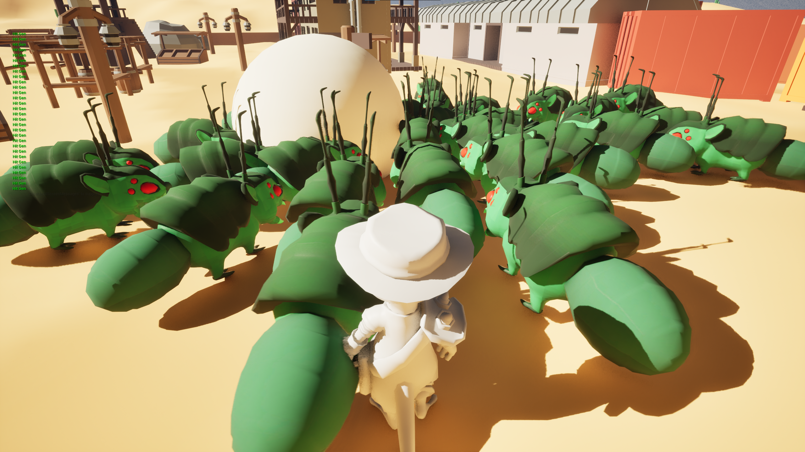
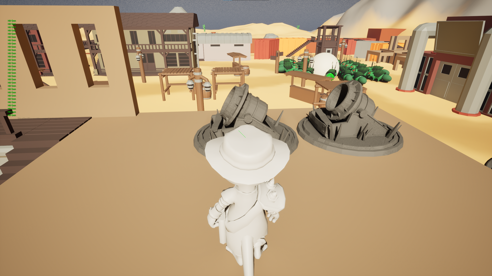

1 / 3

2 / 3

3 / 3

Desert Zumbido is a game my friends and I made for Game Off 2023, whose theme was SCALE. Our idea was to create a tower defense game in the style of Dungeon Defenders set in a western post-apocalyptic town. You play as a gunslinging lizard defending your home from mutant zombie insects.
Although the game is unfinished, it contains some features that I implemented that I am proud of, and it was overall a great learning experience in Unreal Engine.
SCREENSHOTS
VERSION CONTROL
Game Off is a jam hosted by GitHub so we, obviously, used GitHub as our version control.
It's hard to beat the ease of setting up GitHub as our VCS, as long as we ensured our artists worked on their own sections of the projects, we had minimal issues with merges and binary files.
FEATURES: Enemy AI and Navigation
For this project, I really wanted to try learning how to make interesting enemy AI. I used Unreal's built in navmesh with some empty vector location objects to guild the enemies along a path toward the center tower.
FEATURES: Tower Placement
The first feature I worked on was a way to place towers and keep track of each tower placed. It was a fairly simple implementation but it does have the additional feature of previewing a tower before you placed it and ensuring that towers have a zone around them to prevent towers from being placed to close together.